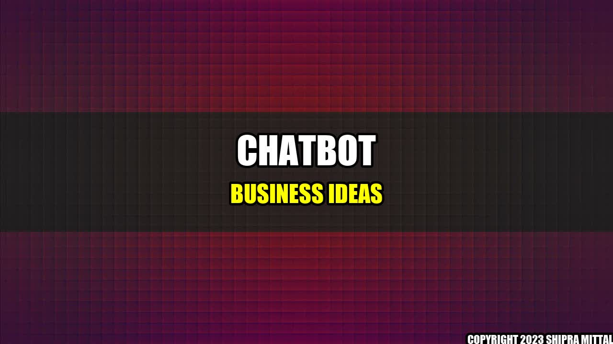

Chatbot Business Ideas: Revolutionizing the Way We Do Business

A few years ago, I was trying to order pizza over the phone. It was a stressful experience, as I had to navigate through several menus, options, and toppings, all while trying to make sure that I was not misunderstood by the person on the other end. Suddenly, it hit me: why not use a chatbot instead?
Since then, I have become a big fan of chatbots and the numerous ways in which they can simplify our lives. Chatbots are software programs that use natural language processing (NLP), artificial intelligence (AI), and machine learning (ML) to carry on conversations with users over messaging apps, websites, and social media platforms.
Here are just a few quantifiable examples of how chatbots are revolutionizing the way we do business:
- Chatbots can handle up to 80% of all customer interactions, freeing up staff time for more complex tasks.
- Chatbots can increase sales by up to 67% by proactively engaging with customers and suggesting products or services.
- Chatbots can reduce customer response time from hours to just seconds, leading to higher customer satisfaction rates.
Chatbot Business Ideas
Chatbots can be used in virtually any business, from healthcare to hospitality, financial services to retail. Here are some chatbot business ideas that you can explore:
- Customer Service Chatbots: These chatbots are designed to handle customer queries, complaints, and feedback in real-time, 24/7. Examples include the customer service chatbot used by H&M (which handles questions about deliveries, returns, and product availability) and the chatbot used by Marriott Hotels (which provides guests with information about hotel amenities, local attractions, and room service).
- E-commerce Chatbots: These chatbots are designed to help customers find products, make purchases, track orders, and get product recommendations. Examples include the chatbot used by Sephora (which helps customers choose makeup products based on skin tone and personal style) and the chatbot used by Domino's Pizza (which allows customers to order pizza using their favorite messaging app).
- HR Chatbots: These chatbots are designed to help HR departments automate routine tasks such as job postings, resume screening, and interview scheduling. Examples include the chatbot used by Unilever (which helps candidates apply for jobs at the company) and the chatbot used by T-Mobile (which answers employee questions about benefits and HR policies).
- Appointment Scheduling Chatbots: These chatbots are designed to help businesses manage their appointments and bookings. Examples include the chatbot used by MyTime (which allows customers to book appointments with local businesses such as hair salons and yoga studios) and the chatbot used by Woebot (which helps patients schedule therapy sessions with a licensed mental health professional).
Conclusion
Chatbots are rapidly becoming an essential tool for businesses looking to improve customer engagement, reduce operational costs, and increase revenue. By adopting chatbots, businesses can automate routine tasks, provide 24/7 customer support, and gain valuable insights into customer behavior and preferences.
In conclusion, here are three key takeaways from this article:
- Chatbots can handle up to 80% of all customer interactions, leading to higher customer satisfaction rates and lower staff costs.
- Chatbots can be used in virtually any industry, from healthcare to hospitality, financial services to retail.
- Chatbots can provide valuable insights into customer behavior and preferences, allowing businesses to improve their products and services.
References:
Category: Business & Technology
Akash Mittal Tech Article
Share on Twitter Share on LinkedIn